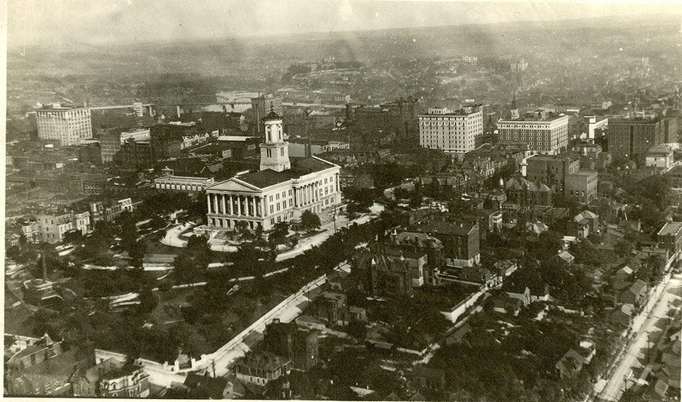
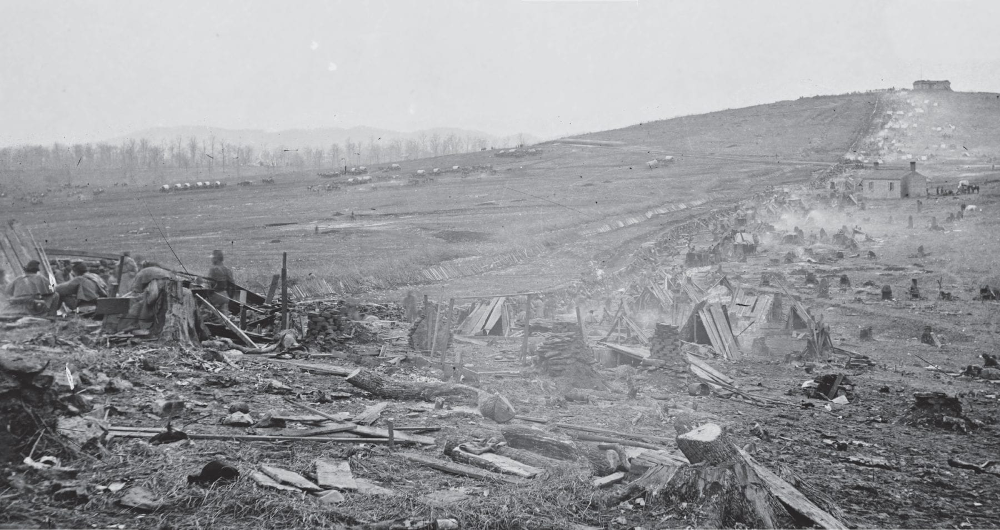

Before Nashville was even a city, in 1689 Martin Chartier built a trading post close to where the city is now. Years later, a group of French traders then established a settlement where the location of downtown Nashville is today. Nashville got its name from Francis Nash who was an American Revolutionary War hero. Tennessee sided with the Confederates during the Civil War and Nashville was the first state capital to fall to the Union in 1862. After the Civil War, Nashville suffered a cholera epidemic. While the city was rebuilding and things were going well, there were several lynchings of blacks. This was a dark time in Nashville's history as segregation grew after trying to rebuild.
During the 1950s desegregation started to happen slowly. Schools were desegregating one grade per year. Nashville's urban redevelopment continued to grow over the years. From the 1960s to the early 1980s racial tensions were still high. In 1998 the Tennessee Titans came to Nashville to be the NFL team there. Nashville has suffered series of floods which have caused damage to many historical buildings in the downtown area. Nashville has had a history of growing and their economy doing well.

